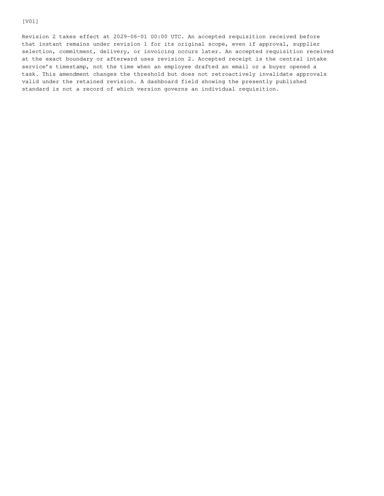

amendment-2.png
Published path: runs/06-procurement-contract-mixed/visual-review/amendment-2.png
Open / download original bytes

validation/runs/06-procurement-contract-mixed/visual-review/amendment-2.png · 71,028 bytes · SHA-256 9d1ad997c525a45196dde44d0b240b69c44edd7485009debae7474fbfe7457c1
